En matemáticas, el límite de una función en un punto es el valor al cual se aproxima la función cuando x se acerca a ese punto. El límite de la función f(x) en el punto x=a se representa utilizando la siguiente notación:

La expresión anterior significa que el límite de la función f(x) cuando x tiende a a es igual a b. Para acabar de entender qué significa el límite de una función, vamos a hallar el siguiente límite:
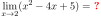Para ver a qué valor se aproxima la función cuando x tiende a 2, podemos ir calculando imágenes de la función de puntos cada vez más cerca de x=2:
Como puedes ver en las dos tablas anteriores, a medida que vamos tomando valores más próximos a x=2, la función se va acercando a 1. Por lo tanto, el límite de la función cuando x tiende a 2 es 1.
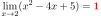A continuación puedes ver la función representada gráficamente. Como puedes comprobar, la función se acerca a 1 cuando x se aproxima a 2.
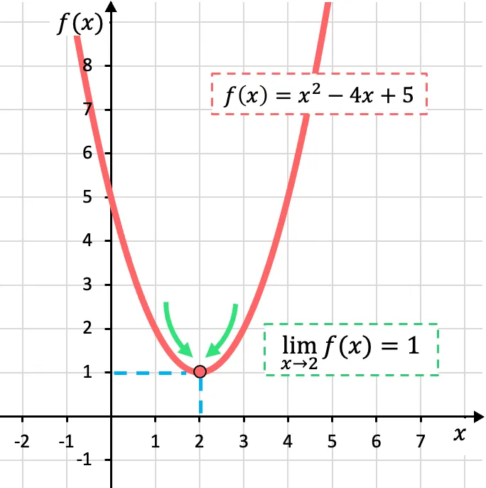Fíjate en la gráfica que la función se acerca al mismo valor independientemente de si nos acercamos por la izquierda o por la derecha. Más abajo profundizaremos más sobre este concepto de los límites.
Para calcular el límite de una función en un punto simplemente tenemos que sustituir el valor de ese punto en la función. Por ejemplo, si queremos resolver el límite cuando x tiende a 3 de la siguiente función, debemos sustituir las x de la función por 3:
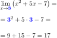Más ejemplos de cálculos de límites de funciones:
.svg)
Una vez hemos visto la definición de límite de una función, vamos a analizar el concepto de límites laterales. Existen dos tipos de límites laterales: el límite lateral por la izquierda y el límite lateral por la derecha. El límite lateral de la función por la izquierda se expresa con un signo menos en el punto donde se analiza el límite y, por otro lado, el límite lateral por la derecha se indica con el signo más.
Fíjate en el siguiente ejemplo para entender mejor el significado de los límites laterales
Como puedes ver en la representación gráfica de esta función definida a trozos, los límites laterales dependen del lado en el que se calculen. En este caso, la función tiende a 3 cuando x tiende a 2 por la izquierda, ya que la función toma valores cada vez más próximos a 3 cuando x se aproxima a x=2 por su izquierda. En cambio, el límite lateral de la función en x=2 por la derecha vale 6. Porque si nos acercamos al punto x=2 desde su derecha, la función va tomando valores cada vez más cercanos a f(x)=6.
Acabamos de ver un ejemplo en el que los límites laterales de una función son distintos, pero… ¿qué pasa si los límites laterales son iguales? Si los dos límites laterales de una función en un punto existen y son iguales, existe el límite de la función en dicho punto y el resultado del límite es el valor de los límites laterales. Es decir, para que exista el límite de una función en un punto, se debe cumplir la siguiente condición:
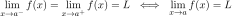Por lo tanto, si los límites laterales de una función en un punto son diferentes, el límite de la función en ese punto no existe. Vamos a resolver un ejemplo para acabar de comprender el concepto de límites laterales:
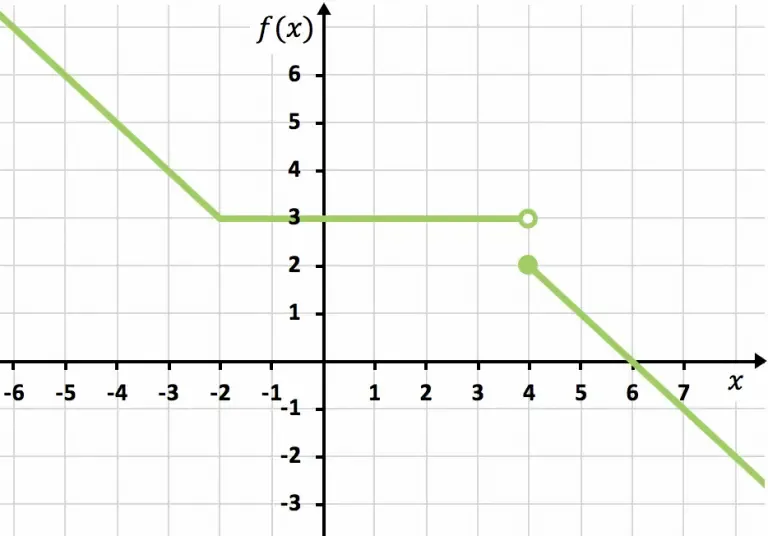Los límites laterales en el punto x=-2 de la función representada gráficamente coinciden, ya que el valor de la función tiende a 3 indistintamente de si nos aceramos a x=-2 por la izquierda o por la derecha. En consecuencia, el límite de la función en x=-2 es igual a 3.
En cambio, en el punto x=4 los límites laterales son distintos, ya que por la izquierda la función se aproxima a f(x)=3 pero por la derecha la función se aproxima a f(x)=2. De modo que el límite de la función en este punto no existe.
\ 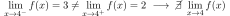El límite de una función cuando x tiende a infinito, ya sea positivo o negativo, puede ser un valor real, más infinito, menos infinito o no existir.
Como puedes ver en el primer gráfico, la función representada tiende al valor real k al infinito, porque se va acercando a k a medida que x va creciendo. La función de arriba a la derecha tiende al más infinito cuando x tiende a infinito, ya que crece indefinidamente al aumentar de valor la x. En cambio, la gráfica de abajo a la izquierda decrece sin parar y por eso tiende a menos infinito. Finalmente, la última función es periódica y no tiende a ningún valor, por lo tanto, no existe el límite en el infinito en este caso. Resolver este tipo de límites no es nada fácil, ya que se debe aplicar un procedimiento previo. E, incluso, dependiendo de cómo sea el límite en el infinito, este procedimiento varia.
Las indeterminaciones, también llamadas formas indeterminadas, son expresiones matemáticas que aparecen en el cálculo de límites de funciones cuyo resultado no está definido. Los diferentes tipos de indeterminaciones son las siguientes:
Es decir, cuando en el cálculo de un límite obtenemos una indeterminación de las anteriores, no significa que el límite no exista o que no se pueda resolver, sino que tendremos que hacer alguna modificación a la función para poder hallar la solución del límite. En el siguiente enlace puedes ver la explicación de cómo resolver todos los tipos de indeterminaciones:
Resuelve los siguientes límites de funciones:
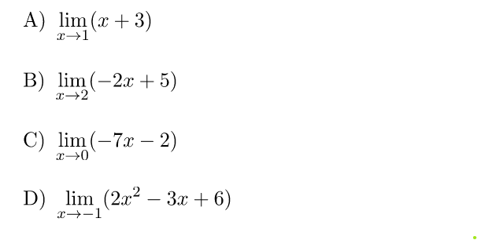Para calcular los límites, sustituimos el valor de x en la función y hacemos las operaciones:
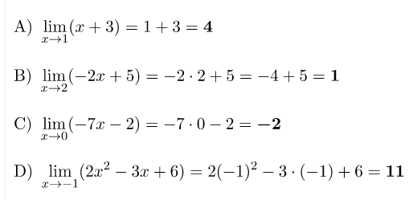Aunque los cálculos en este ejercicio son un poco más complicados, estos límites también se pueden solucionar por sustitución:
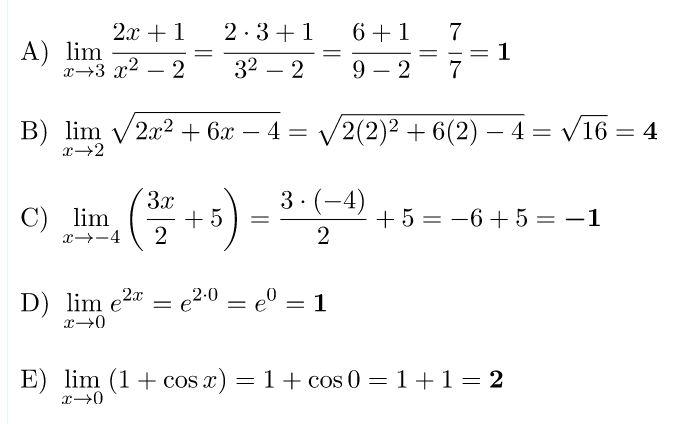Encuentra el límite de la siguiente función exponencial cuando x tiende a más infinito:
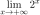Aunque sea una función exponencial, el proceso para resolver el límite es el mismo: sustituir la x por el infinito.
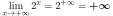